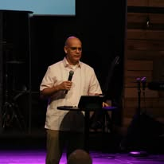

Silencio sagrado
Al comenzar el culto te pediremos que pongas tu teléfono en silencio para que nada te distraiga de la presencia de Dios.
Tu navegador no puede silenciar el teléfono por sí solo; te recordaremos hacerlo con un aviso y vibración.
Iglesia Bautista · Houston, Texas
Somos una iglesia hispana con las puertas abiertas a todos. Aquí hay un lugar para ti y para tu familia.
“Porque de tal manera amó Dios al mundo…”Juan 3:16

Nuestra historia
El pastor Liván Quintana nació en Cuba, donde sirvió al Señor por más de 20 años. Hoy, junto a su esposa Zoila y su familia, pastorea Vida en Cristo, una iglesia plantada en el sur de Houston, cerca de NASA.
Somos una iglesia hispana, pero abierta a todas las personas a nuestro alrededor. Servimos a nuestra comunidad, trabajamos con los niños y acompañamos a familias recién llegadas en los complejos de apartamentos del área. Nuestro sueño es participar en misiones locales y plantar nuevas iglesias.
Nuestra semana
Los horarios pueden cambiar en días festivos. Confírmalos en nuestro Facebook.
Modo Culto
Abre esta página durante el culto: sigue el orden del servicio en vivo, completa el bosquejo del sermón y guarda tus notas.
Al comenzar el culto te pediremos que pongas tu teléfono en silencio para que nada te distraiga de la presencia de Dios.
Tu navegador no puede silenciar el teléfono por sí solo; te recordaremos hacerlo con un aviso y vibración.
Sala de Oración
Escoge qué tan privada quieres que sea tu petición. Puedes publicarla de forma anónima en el muro para que la iglesia ore contigo, enviarla solo al pastor o guardarla cifrada en tu diario personal, al que nadie más puede entrar.
Solo tú puedes abrirlo. Tus oraciones se cifran en este dispositivo y nunca salen de él.
Paso 1 de 4 · Adoración
Toma un momento para reconocer quién es Dios. Inhala despacio… exhala. Él está aquí contigo.
“Estad quietos, y conoced que yo soy Dios.” — Salmo 46:10
Jóvenes Vida en Cristo
Un espacio para ti: retos, preguntas reales, música y amigos que caminan contigo.
2º domingo del mes · 1:25 PM · Salón #113 · ¡Trae tu Biblia!
Proyecta la pantalla y jueguen todos juntos.
Pregunta 1/5
Marca cada día que lo cumplas.
Hazla de forma anónima. Los líderes responderán en la próxima reunión.
Ministerio de Mujeres
Mujeres que se animan unas a otras, estudian la Palabra juntas y sirven con amor. Aquí hay un lugar para ti, seas joven o abuela.
…
Te ponemos en pareja con otra hermana para orar la una por la otra durante un mes.
Ministerios
Enseñanza bíblica, juegos y mucho amor para los más pequeños de la casa.
Acompañamos a las familias recién llegadas a Houston en los complejos de apartamentos del área.
Adoramos con todo el corazón. Si cantas o tocas un instrumento, ¡te esperamos!
Llevamos el evangelio a nuestra ciudad y soñamos con plantar nuevas iglesias.
Fortalecemos a las parejas y a las familias con la Palabra de Dios.
Estudios bíblicos para crecer en la fe, paso a paso.
En vivo y en comunidad
Fotos, videos y transmisiones de nuestros cultos, directamente de nuestra página de Facebook.
Planea tu visita
📍 18131 Nassau Bay Dr, Houston, TX 77058
🕐 Domingos · 12:45 PM · En la capilla
¡Lo que te haga sentir cómodo! Aquí no importa la ropa, importa tu corazón.
Sí, tenemos un ministerio de niños con maestros que los cuidan y les enseñan la Biblia.
Sí, nuestros cultos son en español, pero todos son bienvenidos y con gusto te ayudamos en inglés.
Cada domingo a las 12:45 PM en la capilla, 18131 Nassau Bay Dr, Houston, TX 77058.